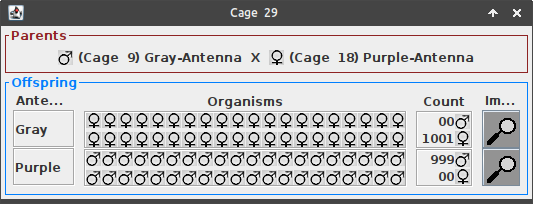

Juan C. Arboleda R.
Laboratorio de Genética General
2020-06-08
El siguiente es un ejemplo de un ejercicio de genética general usando el software VGLII. Para este ejemplo escogimos un problema de la carpeta OneGene, específicamente el archivo OneGene08.pr2. Estos son los organismos "colectados en campo":
A partir de los organismos de la caja 1 se realizaron cruces entre organismos con las mismas características durante 8 generaciones con el fin de obtener cepas puras.
Los cruces entre organismos con antenas grises se llevaron a cabo de la caja 2 a la 9, en esta última se puede suponer con cierta seguridad que se tiene una cepa pura.
Los cruces entre organismos con antenas púrpura se realizaron en las cajas 10 a 18, en los primeros cruces (e.g. caja 11) aparecieron organismos con antenas rojas, lo que indica que organismos con antenas púrpura portan información genética capaz de producir descendencia roja.
Los cruces entre organismos con antenas rojas se realizaron en las cajas 19 a 26, en estos cruces todos los descendientes tuvieron antenas color rojo.
Con las cepas que suponemos puras se realizaron supercruces de 2000 descendientes para saber qué tipo de relación se presenta entre los fenotipos de las antenas.
Se cruzó un macho de antenas grises de la caja 9 con una hembra de antena púrpura de la caja 18. Los resultados de este cruce se encuentran en la caja 29 y fueron:
El hecho de no encontrar ningún macho de antenas grises y ninguna hembra de antenas púrpuras nos indica que estas características pueden estar ligadas al sexo.
También se realizó el cruce recíproco (hembra de antenas grises x macho de antenas púrpuras) para evaluar si los resultados diferían de los del cruce anterior y si soportaban la hipótesis de que el color de la antena es una característica ligada al sexo.
Los resultados de este cruce (caja 28) fueron:
Este resultado soporta la hipótesis de que el color de antena está ligado al sexo, pero además nos indica que la característica de antenas grises es dominante sobre la de antenas púrpuras.
Supongamos que estos organismos tienen sistema de determinación sexual XY, y que el gen que determina el color de antena está en el cromosoma X. Ya vimos que en la población se presentan los fenotipos "antena gris", "antena roja" y "antena púrpura", así que podemos plantear la hipótesis de que existe un alelo para cada uno de estos colores en la población.
Si asumimos las anteriores hipótesis, los cruces que realizamos corresponderían a los siguientes cuadros de Punnet:
XG: Alelo para antenas grises
Xp: Alelo para antenas púrpuras
1er cruce: macho de antenas grises x hembra de antena púrpura
| Xp | |
|---|---|
| XG | Xp XG |
| Y | Xp Y |
En este caso obtendríamos que la mitad de los descendientes serían hembras de antenas grises y la otra mitad machos de antenas púrpuras.
Comprobemos si los resultados concuerdan con nuestras hipótesis:
2do cruce: hembra de antenas grises x macho de antenas púrpuras
| XG | |
|---|---|
| Xp | XG Xp |
| Y | XG Y |
En este caso obtendríamos que la mitad de los descendientes serían hembras de antenas grises y la otra mitad machos de antenas grises.
Comprobemos si los resultados concuerdan con nuestras hipótesis:

NOTA: El programa tiene un bug, este debería aceptar valores esperados iguales a cero y ajustar de acuerdo a esto los grados de libertad de la prueba de chi-cuadrado.
Se cruzó un macho de antenas púrpuras con una hembra de antenas rojas. Los siguientes fueron los resultados (caja 30):
Como las hipótesis de que los organismos tienen sistema de determinación sexual XY y de que el gen para el color de antenas está en el cromosoma X nos han funcionado bien para explicar los datos que observamos, entonces seguiremos trabajando bajo esta hipótesis. Para este nuevo cruce tendríamos:
| Xr | |
|---|---|
| Xp | Xr Xp |
| Y | Xr Y |
En este caso obtendríamos que la mitad de los descendientes serían hembras de antenas púrpura y la otra mitad machos de antenas rojas.
Hacemos la prueba estadística:
Nuestra hipótesis sigue estando de acuerdo con los datos (suspiro de alivio).
Además, los datos y nuestra hipótesis nos indican que el alelo para color púrpura es dominante sobre el alelo para color rojo.
Ahora que confiamos más en nuestra hipótesis podemos hacer predicciones con ella ¡Para eso es la ciencia! ¿no?
El cruce recíproco (hembra de antenas púrpura x macho de antenas rojas), según nuestra hipótesis debería darnos los siguientes resultados:
| Xp | |
|---|---|
| Xr | Xp Xr |
| Y | Xp Y |
En este caso obtendríamos que la mitad de los descendientes serían hembras de antenas púrpura y la otra mitad machos de antenas púrpura.
Hacemos el cruce y obtenemos los resultados en la caja 31 (qué suspenso). Miremos si los resultados sí concuerdan con nuestra hipótesis:
¡Todavía concuerdan! Esta hipótesis parece muy buena.
Lo último que nos falta por probar es cómo es la relación entre los alelos para color gris y color rojo.
Según nuestra hipótesis podemos hacer la siguiente predicción para un cruce entre un macho de antenas grises y una hembra de antenas rojas.
| Xr | |
|---|---|
| XG | Xr XG |
| Y | Xr Y |
En este caso obtendríamos que la mitad de los descendientes serían hembras de antenas grises y la otra mitad machos de antenas rojas.
Todavía no tenemos evidencia para decir que el alelo para antenas grises es dominante sobre el alelo para antenas rojas, aquí solo hicimos una suposición dado que no teníamos más datos.
Los resultados están en la caja 32 ¡y parece que concuerdan con nuestra predicción!
Ahora hagamos la predicción para el cruce recíproco (hembra de antenas grises x macho de antenas rojas):
| XG | |
|---|---|
| Xr | XG Xr |
| Y | XG Y |
En este caso obtendríamos que la mitad de los descendientes serían hembras de antenas grises y la otra mitad machos de antenas grises.
Los resultados están en la caja 33 y también se ajustan a nuestra hipótesis.

Por lo tanto podemos concluir que: